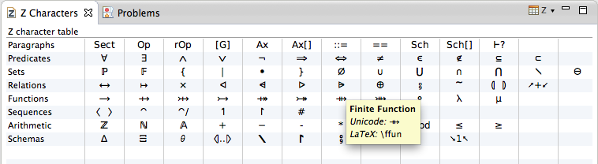
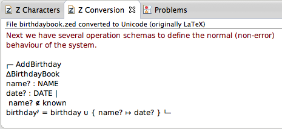
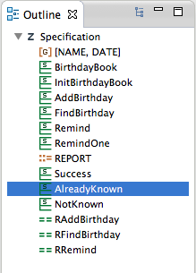

In addition to the CZT Editor, the CZT editor plug-in provides a set of views.
Z Character Map

This view provides users a palette of Unicode characters, including Z-specific characters, useful for writing Z specifications, particularly Using Unicode markup.
Users can insert a Z character or construct into the active editor by clicking on a character in the panel.
The actual text inserted follow the logic below:
Z Conversion

This view is used to receive the contents converted from the specification in the editor. It also supports syntax colouring using the same rule as the editor.
Outline

The view provides the overview of the Z specification in the active CZT editor. If enabled, the selection in the editor can synchronize with the selection in the Outline view.